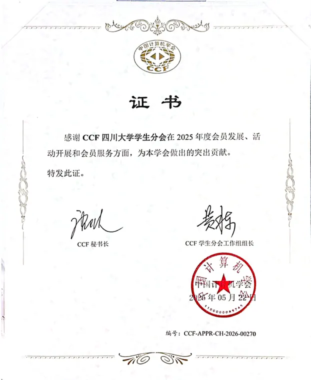

RESEARCH / EXCHANGE
让前沿，不再遥远
依托 CCF 平台开展“CCF 走进川大”、SPP 领航计划等活动，连接专家学者、企业导师与青年学生。
CCF SICHUAN UNIVERSITY STUDENT CHAPTER
成立于 2012 年，SCU CCF 连接 CCF 优质资源与川大学生，围绕学术引领、竞赛训练、学业帮扶与生涯发展，服务专业成长。
01 / ABOUT
CCF 四川大学学生分会成立于 2012 年 6 月 12 日，是 CCF 在全国成立的第 7 个学生分会。分会面向全校计算机相关专业学生开展学术交流、会员服务、活动组织与跨校合作，推动 CCF 优质资源进入校园。
看看我们如何行动依托 CCF 平台开展“CCF 走进川大”、SPP 领航计划等活动，连接专家学者、企业导师与青年学生。
以“逸才论道”“全员满绩”“对话菁英”等品牌活动，覆盖竞赛训练、课程学习与生涯规划。
坚持“学会赋能、学院指导、学生主导”，通过本研协作与传帮带，让参与者在组织实践中共同成长。
“学会赋能、学院指导、学生主导。” SCU CCF 分会建设思路
02 / ACTIVITIES
围绕学生成长需求，分会形成学术引领、竞赛训练、学业帮扶、生涯发展四条活动主线，并通过组织建设保障持续运行。
通过“CCF 走进川大”和 SPP 领航计划，连接专家报告、技术分享与成长指导。
2025—2026 学年已持续开展 CCF 走进川大、CSP/CACC 训练、全员满绩、对话菁英与企业行等活动。
03 / ACHIEVEMENTS
自 2012 年成立以来，分会持续记录品牌活动、竞赛成绩、集体荣誉与成员成长；以下内容选自现有分会档案。
这里收录品牌活动、竞赛成绩、集体荣誉与成长网络；更多资料仍将按年份持续整理。

CURRENT CHAPTER
从 CCF 走进川大、SPP 领航计划，到 CSP/CACC 训练、全员满绩、对话菁英与企业行，活动覆盖学术、竞赛、学业和生涯发展。
COLLECTIVE HONORS
分会于 2013、2016、2017、2022、2023、2025 年获评 CCF 优秀学生分会，并获得四川大学十佳学生集体、百佳学生集体等校级荣誉。
CHAPTER ARCHIVE
2012 年 6 月 12 日，CCF 四川大学学生分会成立，从此持续搭建 CCF 与川大学生会员之间的桥梁。
04 / OPEN SOURCE
分会官方网站源码与内容档案已托管在 CCF SCU GitHub 组织。目前先从网站建设开始开放，其他适合公开的项目与资料将逐步整理。
GitHub05 / JOIN US · FINAL CHAPTER
欢迎四川大学计算机相关专业学生关注并参与。加入迎新群即可获取活动通知与 CCF 会员资讯；执委招募一般在每学年秋季开展。